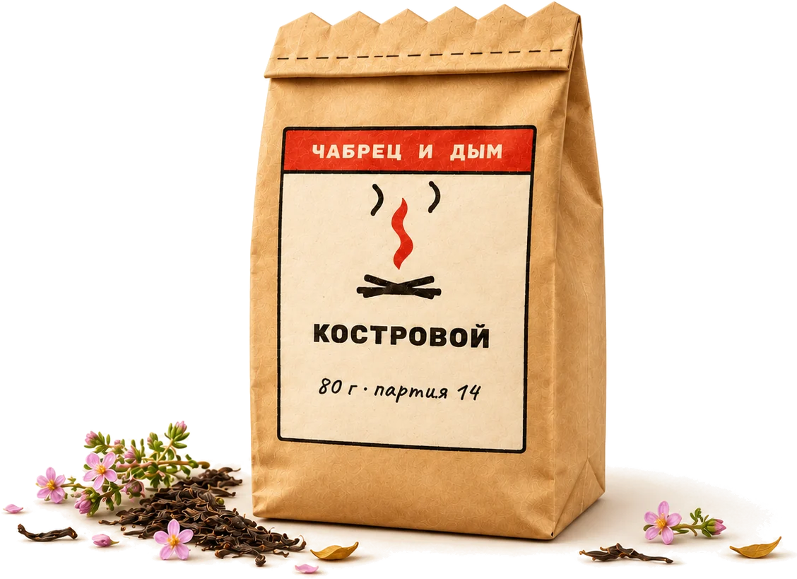
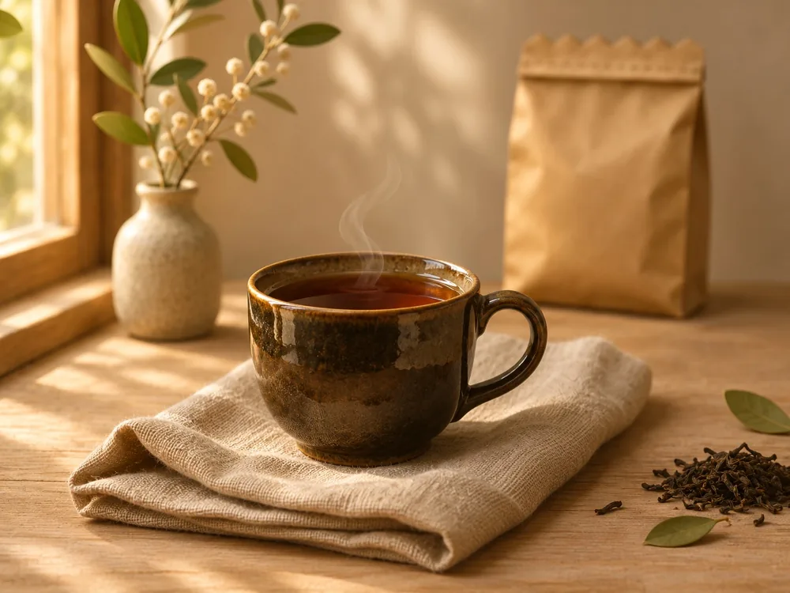

-
1
Собираем вручную
Отсеиваем пыль и сор, в пакет идут только целые листья.
-
2
Фасуем в крафт
Шов прошиваем, чтобы чай не выдыхался. На пакете номер партии и дата фасовки.
-
3
4 г на чашку
Чайная ложка с горкой на 200 мл воды.
-
4
95 °C, 4 минуты
После кипения дайте воде постоять минуту. Дольше пяти минут чай начинает горчить.

Чай и травяные сборы ручной фасовки
Фасуем чай и травяные сборы вручную, партиями по 40 пакетов. На каждом пакете указаны номер партии и дата фасовки, так что свежесть легко проверить.
Каталог чая и сборов
В каталоге семь вкусов: чёрный и зелёный чай, улун, травяные и ягодные сборы. Для знакомства есть набор «Пробник» с четырьмя вкусами по 15 г.
Подбор чая
Ответьте на четыре вопроса: когда пьёте чай, чего ждёте от чашки, какую крепость любите и что добавляете. Мы подберём вкус из каталога и напишем, чем он подходит.

Подарочный набор из трёх вкусов
Выберите три пакета, и мы упакуем их в коробку с открыткой. Один вкус можно взять дважды, например если «Костровой» понравился больше остальных.
Выбрано 0 из 3
Как мы делаем чай
Для «Кострового» берём крупнолистовой чёрный чай и коптим его над тлеющими яблоневыми щепками. Дымный запах дают сами щепки, ароматизаторы не нужны.
Травы для сборов сушим в тени и без печи, так они сохраняют цвет и запах. Готовый чай фасуем в крафтовые пакеты с прошитым швом: влага внутрь не попадает, и чай не выдыхается.
Костровой
- Состав
- чёрный чай, копчение яблоневыми щепками
- Заваривание
- 95 °C, 4 мин, 4 г на 200 мл
- Вес
- 80 г
- Партия
- № 14, дата фасовки на пакете
Хранить в сухом месте
Как заваривать чай
Температура воды зависит от вида чая. Чёрный и копчёный заваривают водой около 95 °C, зелёный при 80 °C: в кипятке он начинает горчить. Улун выдерживает до пяти проливов, а травяные сборы заливают кипятком и настаивают дольше. Количество указано на чашку 200 мл.
| Вид | Вода | Время | На 200 мл | Что из каталога |
|---|
Доставка чая по городу и России
По городу привозим курьером на следующий день после заказа. В другие города отправляем СДЭК и Почтой России в день заказа, от 2 500 ₽ доставка бесплатная.
Курьер по городу
- Доставка на следующий день после заказа
- Интервал 2 часа, по согласованию
- Стоимость 300 ₽
СДЭК и Почта
- В пункт выдачи или на почту по России
- Отправка в день заказа
- Бесплатно от 2 500 ₽
Оплата и возврат
- Картой на сайте или наличными курьеру
- Возврат за нераспакованные пакеты в течение 7 дней
- Промокод ЧАБРЕЦ10: скидка 10%
Условия придуманы для демо-сайта.